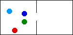
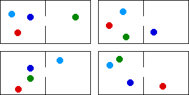
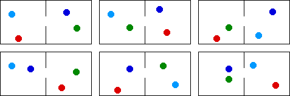

| Equal-weight bins can be called a maximum entropy partition
because it is the most disordered, in this sense: |
| any other arrangement allows us to
distinguish the bins from one another, at least in terms of the
number of elements in each bin. |
| Another way to understand that equal-weight bins have maximum entropy is to recall that
higher entropy configurations are more likely to occur. |
| For example, suppose we have two boxes and
count the number of ways we can arrange four particles among the two boxes. For this
experiment, we are interested only in the number of particles in each box, not in
where the particles lie in the boxes. |
| To make the counting clearer, we imagine the
particles are painted different colors. |
| All four particles can be be put in the left box in only one way. |
|  |
| Three of the four particles can be be put in the left box in four ways. |
|  |
| Two of the four particles can be be put in the left box in six ways. |
|  |
|
| There are more ways for the equal-weight arrangement to occur, so this is the most
likely configuration, assuming each separate configuration is equally likely. |